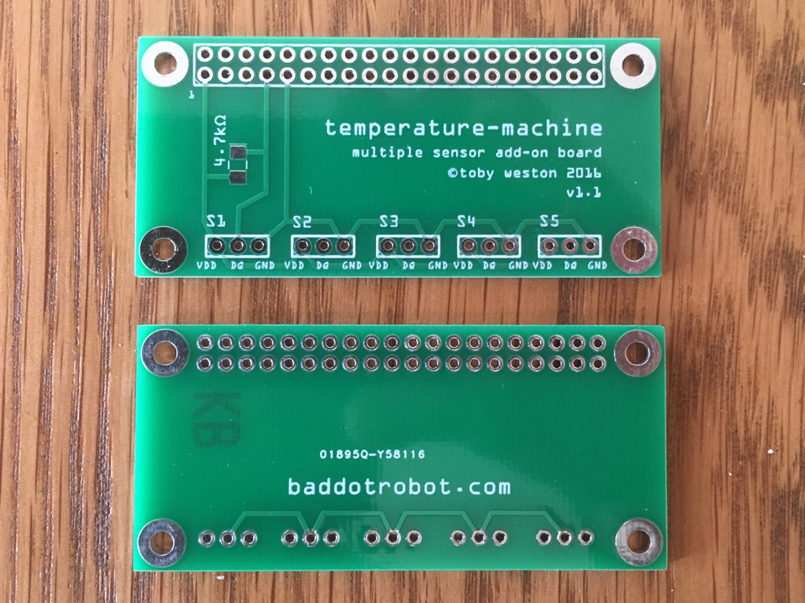

Add-on Board
Soldering the resistor to between the power and data lines of the sensor cable can be a bit tricky. Especially if you want to connect more than one sensor to your Pi (as you’d solder the resistor to two power and two data lines!).
To make things easier, I designed a (very) simple board. It lets you connect up to five sensors, all you need to do is crimp the sensor cables with the appropriate connector.
